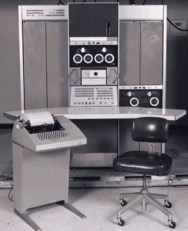
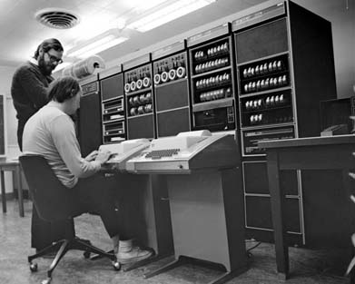

| [ Team LiB ] |
|
2.1 Origins and History of Unix, 1969–1995A notorious 'second-system effect' often afflicts the successors of small experimental prototypes. The urge to add everything that was left out the first time around all too frequently leads to huge and overcomplicated design. Less well known, because less common, is the 'third-system effect'; sometimes, after the second system has collapsed of its own weight, there is a chance to go back to simplicity and get it really right. The original Unix was a third system. Its grandfather was the small and simple Compatible Time-Sharing System (CTSS), either the first or second timesharing system ever deployed (depending on some definitional questions we are going to determinedly ignore). Its father was the pioneering Multics project, an attempt to create a feature-packed 'information utility' that would gracefully support interactive timesharing of mainframe computers by large communities of users. Multics, alas, did collapse of its own weight. But Unix was born from that collapse. 2.1.1 Genesis: 1969–1971Unix was born in 1969 out of the mind of a computer scientist at Bell Laboratories, Ken Thompson. Thompson had been a researcher on the Multics project, an experience which spoiled him for the primitive batch computing that was the rule almost everywhere else. But the concept of timesharing was still a novel one in the late 1960s; the first speculations on it had been uttered barely ten years earlier by computer scientist John McCarthy (also the inventor of the Lisp language), the first actual deployment had been in 1962, seven years earlier, and timesharing operating systems were still experimental and temperamental beasts. Computer hardware was at that time more primitive than even people who were there to see it can now easily recall. The most powerful machines of the day had less computing power and internal memory than a typical cellphone of today.[1] Video display terminals were in their infancy and would not be widely deployed for another six years. The standard interactive device on the earliest timesharing systems was the ASR-33 teletype—a slow, noisy device that printed upper-case-only on big rolls of yellow paper. The ASR-33 was the natural parent of the Unix tradition of terse commands and sparse responses.
When Bell Labs withdrew from the Multics research consortium, Ken Thompson was left with some Multics-inspired ideas about how to build a file system. He was also left without a machine on which to play a game he had written called Space Travel, a science-fiction simulation that involved navigating a rocket through the solar system. Unix began its life on a scavenged PDP-7 minicomputer[2] like the one shown in Figure 2.1, as a platform for the Space Travel game and a testbed for Thompson's ideas about operating system design.
Figure 2.1. The PDP-7. The full origin story is told in [Ritchie79] from the point of view of Thompson's first collaborator, Dennis Ritchie, the man who would become known as the coinventor of Unix and the inventor of the C language. Dennis Ritchie, Doug McIlroy, and a few colleagues had become used to interactive computing under Multics and did not want to lose that capability. Thompson's PDP-7 operating system offered them a lifeline. Ritchie observes: "What we wanted to preserve was not just a good environment in which to do programming, but a system around which a fellowship could form. We knew from experience that the essence of communal computing, as supplied by remote-access, time-shared machines, is not just to type programs into a terminal instead of a keypunch, but to encourage close communication". The theme of computers being viewed not merely as logic devices but as the nuclei of communities was in the air; 1969 was also the year the ARPANET (the direct ancestor of today's Internet) was invented. The theme of "fellowship" would resonate all through Unix's subsequent history. Thompson and Ritchie's Space Travel implementation attracted notice. At first, the PDP-7's software had to be cross-compiled on a GE mainframe. The utility programs that Thompson and Ritchie wrote to support hosting game development on the PDP-7 itself became the core of Unix—though the name did not attach itself until 1970. The original spelling was "UNICS" (UNiplexed Information and Computing Service), which Ritchie later described as "a somewhat treacherous pun on Multics", which stood for MULTiplexed Information and Computing Service. Even at its earliest stages, PDP-7 Unix bore a strong resemblance to today's Unixes and provided a rather more pleasant programming environment than was available anywhere else in those days of card-fed batch mainframes. Unix was very close to being the first system under which a programmer could sit down directly at a machine and compose programs on the fly, exploring possibilities and testing while composing. All through its lifetime Unix has had a pattern of growing more capabilities by attracting highly skilled volunteer efforts from programmers impatient with the limitations of other operating systems. This pattern was set early, within Bell Labs itself. The Unix tradition of lightweight development and informal methods also began at its beginning. Where Multics had been a large project with thousands of pages of technical specifications written before the hardware arrived, the first running Unix code was brainstormed by three people and implemented by Ken Thompson in two days—on an obsolete machine that had been designed to be a graphics terminal for a 'real' computer. Unix's first real job, in 1971, was to support what would now be called word processing for the Bell Labs patent department; the first Unix application was the ancestor of the nroff(1) text formatter. This project justified the purchase of a PDP-11, a much more capable minicomputer. Management remained blissfully unaware that the wordprocessing system that Thompson and colleagues were building was incubating an operating system. Operating systems were not in the Bell Labs plan—AT&T had joined the Multics consortium precisely to avoid doing an operating system on its own. Nevertheless, the completed system was a rousing success. It established Unix as a permanent and valued part of the computing ecology at Bell Labs, and began another theme in Unix's history—a close association with document-formatting, typesetting, and communications tools. The 1972 manual claimed 10 installations. Later, Doug McIlroy would write of this period [McIlroy91]: "Peer pressure and simple pride in workmanship caused gobs of code to be rewritten or discarded as better or more basic ideas emerged. Professional rivalry and protection of turf were practically unknown: so many good things were happening that nobody needed to be proprietary about innovations". But it would take another quarter century for all the implications of that observation to come home. 2.1.2 Exodus: 1971–1980The original Unix operating system was written in assembler, and the applications in a mix of assembler and an interpreted language called B, which had the virtue that it was small enough to run on the PDP-7. But B was not powerful enough for systems programming, so Dennis Ritchie added data types and structures to it. The resulting C language evolved from B beginning in 1971; in 1973 Thompson and Ritchie finally succeeded in rewriting Unix in their new language. This was quite an audacious move; at the time, system programming was done in assembler in order to extract maximum performance from the hardware, and the very concept of a portable operating system was barely a gleam in anyone's eye. As late as 1979, Ritchie could write: "It seems certain that much of the success of Unix follows from the readability, modifiability, and portability of its software that in turn follows from its expression in high-level languages", in the knowledge that this was a point that still needed making. A 1974 paper in Communications of the ACM [Ritchie-Thompson] gave Unix its first public exposure. In that paper, its authors described the unprecedentedly simple design of Unix, and reported over 600 Unix installations. All were on machines underpowered even by the standards of that day, but (as Ritchie and Thompson wrote) "constraint has encouraged not only economy, but also a certain elegance of design". After the CACM paper, research labs and universities all over the world clamored for the chance to try out Unix themselves. Under a 1958 consent decree in settlement of an antitrust case, AT&T (the parent organization of Bell Labs) had been forbidden from entering the computer business. Unix could not, therefore, be turned into a product; indeed, under the terms of the consent decree, Bell Labs was required to license its nontelephone technology to anyone who asked. Ken Thompson quietly began answering requests by shipping out tapes and disk packs—each, according to legend, with a note signed "love, ken". This was years before personal computers. Not only was the hardware needed to run Unix too expensive to be within an individual's reach, but nobody imagined that would change in the foreseeable future. So Unix machines were only available by the grace of big organizations with big budgets: corporations, universities, government agencies. But use of these minicomputers was less regulated than the even-bigger mainframes, and Unix development rapidly took on a countercultural air. It was the early 1970s; the pioneering Unix programmers were shaggy hippies and hippiewannabes. They delighted in playing with an operating system that not only offered them fascinating challenges at the leading edge of computer science, but also subverted all the technical assumptions and business practices that went with Big Computing. Card punches, COBOL, business suits, and batch IBM mainframes were the despised old wave; Unix hackers reveled in the sense that they were simultaneously building the future and flipping a finger at the system. The excitement of those days is captured in this quote from Douglas Comer: "Many universities contributed to UNIX. At the University of Toronto, the department acquired a 200-dot-per-inch printer/plotter and built software that used the printer to simulate a phototypesetter. At Yale University, students and computer scientists modified the UNIX shell. At Purdue University, the Electrical Engineering Department made major improvements in performance, producing a version of UNIX that supported a larger number of users. Purdue also developed one of the first UNIX computer networks. At the University of California at Berkeley, students developed a new shell and dozens of smaller utilities. By the late 1970s, when Bell Labs released Version 7 UNIX, it was clear that the system solved the computing problems of many departments, and that it incorporated many of the ideas that had arisen in universities. The end result was a strengthened system. A tide of ideas had started a new cycle, flowing from academia to an industrial laboratory, back to academia, and finally moving on to a growing number of commercial sites" [Comer]. Ken (seated) and Dennis (standing) at a PDP-11 in 1972.  The first Unix of which it can be said that essentially all of it would be recognizable to a modern Unix programmer was the Version 7 release in 1979.[3] The first Unix user group had formed the previous year. By this time Unix was in use for operations support all through the Bell System [Hauben], and had spread to universities as far away as Australia, where John Lions's 1976 notes [Lions] on the Version 6 source code became the first serious documentation of the Unix kernel internals. Many senior Unix hackers still treasure a copy.
The beginnings of a Unix industry were coalescing as well. The first Unix company (the Santa Cruz Operation, SCO) began operations in 1978, and the first commercial C compiler (Whitesmiths) sold that same year. By 1980 an obscure software company in Seattle was also getting into the Unix game, shipping a port of the AT&T version for microcomputers called XENIX. But Microsoft's affection for Unix as a product was not to last very long (though Unix would continue to be used for most internal development work at the company until after 1990). 2.1.3 TCP/IP and the Unix Wars: 1980–1990The Berkeley campus of the University of California emerged early as the single most important academic hot-spot in Unix development. Unix research had begun there in 1974, and was given a substantial impetus when Ken Thompson taught at the University during a 1975–76 sabbatical. The first BSD release had been in 1977 from a lab run by a then-unknown grad student named Bill Joy. By 1980 Berkeley was the hub of a sub-network of universities actively contributing to their variant of Unix. Ideas and code from Berkeley Unix (including the vi(1) editor) were feeding back from Berkeley to Bell Labs. Then, in 1980, the Defense Advanced Research Projects Agency needed a team to implement its brand-new TCP/IP protocol stack on the VAX under Unix. The PDP-10s that powered the ARPANET at that time were aging, and indications that DEC might be forced to cancel the 10 in order to support the VAX were already in the air. DARPA considered contracting DEC to implement TCP/IP, but rejected that idea because they were concerned that DEC might not be responsive to requests for changes in their proprietary VAX/VMS operating system [Libes-Ressler]. Instead, DARPA chose Berkeley Unix as a platform—explicitly because its source code was available and unencumbered [Leonard]. Berkeley's Computer Science Research Group was in the right place at the right time with the strongest development tools; the result became arguably the most critical turning point in Unix's history since its invention. Until the TCP/IP implementation was released with Berkeley 4.2 in 1983, Unix had had only the weakest networking support. Early experiments with Ethernet were unsatisfactory. An ugly but serviceable facility called UUCP (Unix to Unix Copy Program) had been developed at Bell Labs for distributing software over conventional telephone lines via modem.[4] UUCP could forward Unix mail between widely separated machines, and (after Usenet was invented in 1981) supported Usenet, a distributed bulletin-board facility that allowed users to broadcast text messages to anywhere that had phone lines and Unix systems.
Still, the few Unix users aware of the bright lights of the ARPANET felt like they were stuck in a backwater. No FTP, no telnet, only the most restricted remote job execution, and painfully slow links. Before TCP/IP, the Internet and Unix cultures did not mix. Dennis Ritchie's vision of computers as a way to "encourage close communication" was one of collegial communities clustered around individual timesharing machines or in the same computing center; it didn't extend to the continentwide distributed 'network nation' that ARPA users had started to form in the mid-1970s. Early ARPANETters, for their part, considered Unix a crude makeshift limping along on risibly weak hardware. After TCP/IP, everything changed. The ARPANET and Unix cultures began to merge at the edges, a development that would eventually save both from destruction. But there would be hell to pay first as the result of two unrelated disasters; the rise of Microsoft and the AT&T divestiture. In 1981, Microsoft made its historic deal with IBM over the new IBM PC. Bill Gates bought QDOS (Quick and Dirty Operating System), a clone of CP/M that its programmer Tim Paterson had thrown together in six weeks, from Paterson's employer Seattle Computer Products. Gates, concealing the IBM deal from Paterson and SCP, bought the rights for $50,000. He then talked IBM into allowing Microsoft to market MS-DOS separately from the PC hardware. Over the next decade, leveraging code he didn't write made Bill Gates a multibillionaire, and business tactics even sharper than the original deal gained Microsoft a monopoly lock on desktop computing. XENIX as a product was rapidly deep-sixed, and eventually sold to SCO. It was not apparent at the time how successful (or how destructive) Microsoft was going to be. Since the IBM PC-1 didn't have the hardware capacity to run Unix, Unix people barely noticed it at all (though, ironically enough, DOS 2.0 eclipsed CP/M largely because Microsoft's co-founder Paul Allen merged in Unix features including subdirectories and pipes). There were things that seemed much more interesting going on—like the 1982 launching of Sun Microsystems. Sun Microsystems founders Bill Joy, Andreas Bechtolsheim, and Vinod Khosla set out to build a dream Unix machine with built-in networking capability. They combined hardware designed at Stanford with the Unix developed at Berkeley to produce a smashing success, and founded the workstation industry. At the time, nobody much minded watching source-code access to one branch of the Unix tree gradually dry up as Sun began to behave less like a freewheeling startup and more like a conventional firm. Berkeley was still distributing BSD with source code. Officially, System III source licenses cost $40,000 each; but Bell Labs was turning a blind eye to the number of bootleg Bell Labs Unix tapes in circulation, the universities were still swapping code with Bell Labs, and it looked like Sun's commercialization of Unix might just be the best thing to happen to it yet. 1982 was also the year that C first showed signs of establishing itself outside the Unix world as the systems-programming language of choice. It would only take about five years for C to drive machine assemblers almost completely out of use. By the early 1990s C and C++ would dominate not only systems but application programming; by the late 1990s all other conventional compiled languages would be effectively obsolete. When DEC canceled development on the PDP-10's successor machine (Jupiter) in 1983, VAXes running Unix began to take over as the dominant Internet machines, a position they would hold until being displaced by Sun workstations. By 1985, about 25% of all VAXes would be running Unix despite DEC's stiff opposition. But the longest-term effect of the Jupiter cancellation was a less obvious one; the death of the MIT AI Lab's PDP-10-centered hacker culture motivated a programmer named Richard Stallman to begin writing GNU, a complete free clone of Unix. By 1983 there were no fewer than six Unix-workalike operating systems for the IBM-PC: uNETix, Venix, Coherent, QNX, Idris, and the port hosted on the Sritek PC daughtercard. There was still no port of Unix in either the System V or BSD versions; both groups considered the 8086 microprocessor woefully underpowered and wouldn't go near it. None of the Unix-workalikes were significant as commercial successes, but they indicated a significant demand for Unix on cheap hardware that the major vendors were not supplying. No individual could afford to meet it, either, not with the $40,000 price-tag on a source-code license. Sun was already a success (with imitators!) when, in 1983, the U.S. Department of Justice won its second antitrust case against AT&T and broke up the Bell System. This relieved AT&T from the 1958 consent decree that had prevented them from turning Unix into a product. AT&T promptly rushed to commercialize Unix System V—a move that nearly killed Unix.
Most Unix boosters thought that the divestiture was great news. We thought we saw in the post-divestiture AT&T, Sun Microsystems, and Sun's smaller imitators the nucleus of a healthy Unix industry—one that, using inexpensive 68000-based workstations, would challenge and eventually break the oppressive monopoly that then loomed over the computer industry—IBM's. What none of us realized at the time was that the productization of Unix would destroy the free exchanges of source code that had nurtured so much of the system's early vitality. Knowing no other model than secrecy for collecting profits from software and no other model than centralized control for developing a commercial product, AT&T clamped down hard on source-code distribution. Bootleg Unix tapes became far less interesting in the knowledge that the threat of lawsuit might come with them. Contributions from universities began to dry up. To make matters worse, the big new players in the Unix market promptly committed major strategic blunders. One was to seek advantage by product differentiation—a tactic which resulted in the interfaces of different Unixes diverging. This threw away cross-platform compatibility and fragmented the Unix market. The other, subtler error was to behave as if personal computers and Microsoft were irrelevant to Unix's prospects. Sun Microsystems failed to see that commoditized PCs would inevitably become an attack on its workstation market from below. AT&T, fixated on minicomputers and mainframes, tried several different strategies to become a major player in computers, and badly botched all of them. A dozen small companies formed to support Unix on PCs; all were underfunded, focused on selling to developers and engineers, and never aimed at the business and home market that Microsoft was targeting. In fact, for years after divestiture the Unix community was preoccupied with the first phase of the Unix wars—an internal dispute, the rivalry between System V Unix and BSD Unix. The dispute had several levels, some technical (sockets vs. streams, BSD tty vs. System V termio) and some cultural. The divide was roughly between longhairs and shorthairs; programmers and technical people tended to line up with Berkeley and BSD, more business-oriented types with AT&T and System V. The longhairs, repeating a theme from Unix's early days ten years before, liked to see themselves as rebels against a corporate empire; one of the small companies put out a poster showing an X-wing-like space fighter marked "BSD" speeding away from a huge AT&T 'death star' logo left broken and in flames. Thus we fiddled while Rome burned. But something else happened in the year of the AT&T divestiture that would have more long-term importance for Unix. A programmer/linguist named Larry Wall quietly invented the patch(1) utility. The patch program, a simple tool that applies changebars generated by diff(1) to a base file, meant that Unix developers could cooperate by passing around patch sets—incremental changes to code—rather than entire code files. This was important not only because patches are less bulky than full files, but because patches would often apply cleanly even if much of the base file had changed since the patch-sender fetched his copy. With this tool, streams of development on a common source-code base could diverge, run in parallel, and re-converge. The patch program did more than any other single tool to enable collaborative development over the Internet—a method that would revitalize Unix after 1990. In 1985 Intel shipped the first 386 chip, capable of addressing 4 gigabytes of memory with a flat address space. The clumsy segment addressing of the 8086 and 286 became immediately obsolete. This was big news, because it meant that for the first time, a microprocessor in the dominant Intel family had the capability to run Unix without painful compromises. The handwriting was on the wall for Sun and the other workstation makers. They failed to see it. 1985 was also the year that Richard Stallman issued the GNU manifesto [Stallman] and launched the Free Software Foundation. Very few people took him or his GNU project seriously, a judgment that turned out to be seriously mistaken. In an unrelated development of the same year, the originators of the X window system released it as source code without royalties, restrictions, or license code. As a direct result of this decision, it became a safe neutral area for collaboration between Unix vendors, and defeated proprietary contenders to become Unix's graphics engine. Serious standardization efforts aimed at reconciling the System V and Berkeley APIs also began in 1983 with the /usr/group standard. This was followed in 1985 by the POSIX standards, an effort backed by the IEEE. These described the intersection set of the BSD and SVR3 (System V Release 3) calls, with the superior Berkeley signal handling and job control but with SVR3 terminal control. All later Unix standards would incorporate POSIX at their core, and later Unixes would adhere to it closely. The only major addition to the modern Unix kernel API to come afterwards was BSD sockets. In 1986 Larry Wall, previously the inventor of patch(1), began work on Perl, which would become the first and most widely used of the open-source scripting languages. In early 1987 the first version of the GNU C compiler appeared, and by the end of 1987 the core of the GNU toolset was falling into place: editor, compiler, debugger, and other basic development tools. Meanwhile, the X windowing system was beginning to show up on relatively inexpensive workstations. Together, these would provide the armature for the open-source Unix developments of the 1990s. 1986 was also the year that PC technology broke free of IBM's grip. IBM, still trying to preserve a price-vs.-power curve across its product line that would favor its high-margin mainframe business, rejected the 386 for most of its new line of PS/2 computers in favor of the weaker 286. The PS/2 series, designed around a proprietary bus architecture to lock out clonemakers, became a colossally expensive failure.[5] Compaq, the most aggressive of the clonemakers, trumped IBM's move by releasing the first 386 machine. Even with a clock speed of a mere 16 MHz, the 386 made a tolerable Unix machine. It was the first PC of which that could be said.
It was beginning to be possible to imagine that Stallman's GNU project might mate with 386 machines to produce Unix workstations almost an order of magnitude less costly than anyone was offering. Curiously, no one seems to have actually got this far in their thinking. Most Unix programmers, coming from the minicomputer and workstation worlds, continued to disdain cheap 80x86 machines in favor of more elegant 68000-based designs. And, though a lot of programmers contributed to the GNU project, among Unix people it tended to be considered a quixotic gesture that was unlikely to have near-term practical consequences. The Unix community had never lost its rebel streak. But in retrospect, we were nearly as blind to the future bearing down on us as IBM or AT&T. Not even Richard Stallman, who had declared a moral crusade against proprietary software a few years before, really understood how badly the productization of Unix had damaged the community around it; his concerns were with more abstract and long-term issues. The rest of us kept hoping that some clever variation on the corporate formula would solve the problems of fragmentation, wretched marketing, and strategic drift, and redeem Unix's pre-divestiture promise. But worse was still to come. 1988 was the year Ken Olsen (CEO of DEC) famously described Unix as "snake oil". DEC had been shipping its own variant of Unix on PDP-11s since 1982, but really wanted the business to go to its proprietary VMS operating system. DEC and the minicomputer industry were in deep trouble, swamped by waves of powerful lowcost machines coming out of Sun Microsystems and the rest of the workstation vendors. Most of those workstations ran Unix. But the Unix industry's own problems were growing more severe. In 1988 AT&T took a 20% stake in Sun Microsystems. These two companies, the leaders in the Unix market, were beginning to wake up to the threat posed by PCs, IBM, and Microsoft, and to realize that the preceding five years of bloodletting had gained them little. The AT&T/Sun alliance and the development of technical standards around POSIX eventually healed the breach between the System V and BSD Unix lines. But the second phase of the Unix wars began when the second-tier vendors (IBM, DEC, Hewlett-Packard, and others) formed the Open Software Foundation and lined up against the AT&T/Sun axis (represented by Unix International). More rounds of Unix fighting Unix ensued. Meanwhile, Microsoft was making billions in the home and small-business markets that the warring Unix factions had never found the will to address. The 1990 release of Windows 3.0—the first successful graphical operating system from Redmond—cemented Microsoft's dominance, and created the conditions that would allow them to flatten and monopolize the market for desktop applications in the 1990s. The years from 1989 to 1993 were the darkest in Unix's history. It appeared then that all the Unix community's dreams had failed. Internecine warfare had reduced the proprietary Unix industry to a squabbling shambles that never summoned either the determination or the capability to challenge Microsoft. The elegant Motorola chips favored by most Unix programmers had lost out to Intel's ugly but inexpensive processors. The GNU project failed to produce the free Unix kernel it had been promising since 1985, and after years of excuses its credibility was beginning to wear thin. PC technology was being relentlessly corporatized. The pioneering Unix hackers of the 1970s were hitting middle age and slowing down. Hardware was getting cheaper, but Unix was still too expensive. We were belatedly becoming aware that the old monopoly of IBM had yielded to a newer monopoly of Microsoft, and Microsoft's mal-engineered software was rising around us like a tide of sewage. 2.1.4 Blows against the Empire: 1991–1995The first glimmer of light in the darkness was the 1990 effort by William Jolitz to port BSD onto a 386 box, publicized by a series of magazine articles beginning in 1991. The 386BSD port was possible because, partly influenced by Stallman, Berkeley hacker Keith Bostic had begun an effort to clean AT&T proprietary code out of the BSD sources in 1988. But the 386BSD project took a severe blow when, near the end of 1991, Jolitz walked away from it and destroyed his own work. There are conflicting explanations, but a common thread in all is that Jolitz wanted his code to be released as unencumbered source and was upset when the corporate sponsors of the project opted for a more proprietary licensing model. In August 1991 Linus Torvalds, then an unknown university student from Finland, announced the Linux project. Torvalds is on record that one of his main motivations was the high cost of Sun's Unix at his university. Torvalds has also said that he would have joined the BSD effort had he known of it, rather than founding his own. But 386BSD was not shipped until early 1992, some months after the first Linux release. The importance of both these projects became clear only in retrospect. At the time, they attracted little notice even within the Internet hacker culture—let alone in the wider Unix community, which was still fixated on more capable machines than PCs, and on trying to reconcile the special properties of Unix with the conventional proprietary model of a software business. It would take another two years and the great Internet explosion of 1993–1994 before the true importance of Linux and the open-source BSD distributions became evident to the rest of the Unix world. Unfortunately for the BSDers, an AT&T lawsuit against BSDI (the startup company that had backed the Jolitz port) consumed much of that time and motivated some key Berkeley developers to switch to Linux.
The settlement set an important precedent by freeing an entire working Unix from proprietary control, but its effects on BSD itself were dire. Matters were not helped when, in 1992–1994, the Computer Science Research Group at Berkeley shut down; afterwards, factional warfare within the BSD community split it into three competing development efforts. As a result, the BSD lineage lagged behind Linux at a crucial time and lost to it the lead position in the Unix community. The Linux and BSD development efforts were native to the Internet in a way previous Unixes had not been. They relied on distributed development and Larry Wall's patch(1) tool, and recruited developers via email and through Usenet newsgroups. Accordingly, they got a tremendous boost when Internet Service Provider businesses began to proliferate in 1993, enabled by changes in telecomm technology and the privatization of the Internet backbone that are outside the scope of this history. The demand for cheap Internet was created by something else: the 1991 invention of the World Wide Web. The Web was the "killer app" of the Internet, the graphical user interface technology that made it irresistible to a huge population of nontechnical end users. The mass-marketing of the Internet both increased the pool of potential developers and lowered the transaction costs of distributed development. The results were reflected in efforts like XFree86, which used the Internet-centric model to build a more effective development organization than that of the official X Consortium. The first XFree86 in 1992 gave Linux and the BSDs the graphical-user-interface engine they had been missing. Over the next decade XFree86 would lead in X development, and an increasing portion of the X Consortium's activity would come to consist of funneling innovations originated in the XFree86 community back to the Consortium's industrial sponsors. By late 1993, Linux had both Internet capability and X. The entire GNU toolkit had been hosted on it from the beginning, providing high-quality development tools. Beyond GNU tools, Linux acted as a basin of attraction, collecting and concentrating twenty years of open-source software that had previously been scattered across a dozen different proprietary Unix platforms. Though the Linux kernel was still officially in beta (at 0.99 level), it was remarkably crash-free. The breadth and quality of the software in Linux distributions was already that of a production-ready operating system. A few of the more flexible-minded among old-school Unix developers began to notice that the long-awaited dream of a cheap Unix system for everybody had snuck up on them from an unexpected direction. It didn't come from AT&T or Sun or any of the traditional vendors. Nor did it rise out of an organized effort in academia. It was a bricolage that bubbled up out of the Internet by what seemed like spontaneous generation, appropriating and recombining elements of the Unix tradition in surprising ways. Elsewhere, corporate maneuvering continued. AT&T divested its interest in Sun in 1992; then sold its Unix Systems Laboratories to Novell in 1993; Novell handed off the Unix trademark to the X/Open standards group in 1994; AT&T and Novell joined OSF in 1994, finally ending the Unix wars. In 1995 SCO bought UnixWare (and the rights to the original Unix sources) from Novell. In 1996, X/Open and OSF merged, creating one big Unix standards group. But the conventional Unix vendors and the wreckage of their wars came to seem steadily less and less relevant. The action and energy in the Unix community were shifting to Linux and BSD and the open-source developers. By the time IBM, Intel, and SCO announced the Monterey project in 1998—a last-gasp attempt to merge One Big System out of all the proprietary Unixes left standing—developers and the trade press reacted with amusement, and the project was abruptly canceled in 2001 after three years of going nowhere. The industry transition could not be said to have completed until 2000, when SCO sold UnixWare and the original Unix source-code base to Caldera—a Linux distributor. But after 1995, the story of Unix became the story of the open-source movement. There's another side to that story; to tell it, we'll need to return to 1961 and the origins of the Internet hacker culture. |
| [ Team LiB ] |
|